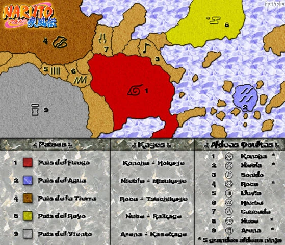
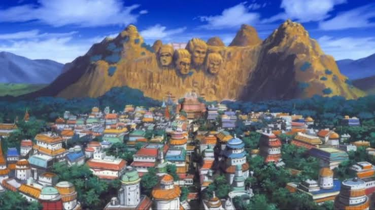

El Ninja Número Uno Hiperactivo
Sin bonus de clan.

Completa misiones y entrena para ascender. Tu bandana cambia contigo.
Diseño de referencia incluido con este proyecto. Las bandanas jugables se dibujan en tiempo real con los colores y símbolos de cada aldea.

Joystick para moverte · botón E para interactuar · J ataque · K / L jutsus · U definitiva · ⇢ esquiva · botón Ⅱ pausa.
Se gana en misiones, arcos y entrenamiento. Sube tu nivel y mejora tus estadísticas.
La moneda de la Hoja. Úsala para desbloquear mejoras cosméticas y recompensas.
Genin → Chūnin → Jōnin → ANBU → Kage. Asciende al alcanzar los niveles 4, 8, 12 y 18.
Cada arco sigue la historia oficial de Naruto y Shippuden, incluidos los arcos de relleno.
Reduce la resolución y desactiva nubes en Konoha 3D. Recomendado para equipos modestos.
Usa el joystick y los botones en pantalla. El botón Ⅱ pausa el combate en cualquier momento.
Un fan game no oficial creado como homenaje a la obra de Masashi Kishimoto.
Masashi Kishimoto
Shueisha · Shōnen Jump
Studio Pierrot · Naruto
Naruto Wiki (Fandom)
Con fines ilustrativos no comerciales.
Naruto y Sasuke: ronildo.facanha
Licencia CC BY 4.0
Aldea de Konoha: kyrox
Licencia CC BY 4.0
Kakashi: Tigerar1
Licencia Sketchfab Standard
Sprites chibi, escenarios,
bandanas y efectos
generados proceduralmente.
Web Audio API
Composición procedural original.
Dragon Ball Xenoverse
Naruto Shippuden: Ultimate Ninja Storm
A todos los que crecieron
soñando con ser Hokage.
Three.js r128 · MIT
GLTFLoader · SkeletonUtils
Modelos optimizados para este proyecto.
NARUTO: SHINOBI LEGACY es un fan game no oficial...
Elimina a todos los enemigos
La Voluntad del Fuego prevalece.